Change analysis for Oman for PRIMAP-hist v2.8_final compared to
v2.7_final
This changelog is published under the creative commons non-commercial
share alike license. For more information see creativecommons.org.
Overview over
emissions by sector and gas
The following figures show the aggregate national total emissions
excluding LULUCF AR6GWP100 for the country reported priority scenario.
The dotted lines show the v2.7_final data.
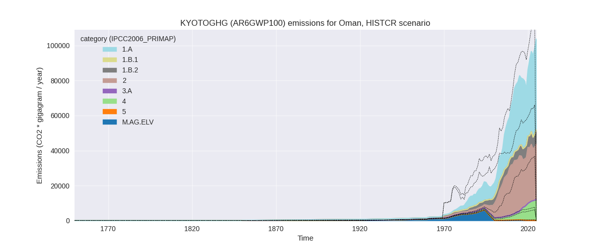
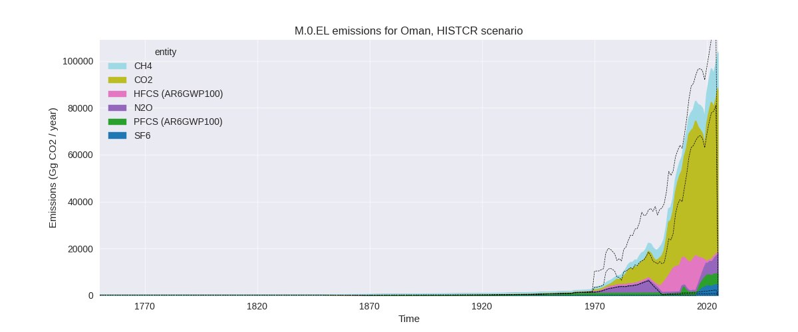
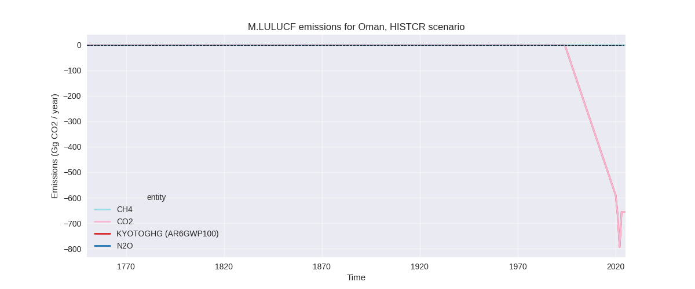
The following figures show the aggregate national total emissions
excluding LULUCF AR6GWP100 for the third party priority scenario. The
dotted lines show the v2.7_final data.
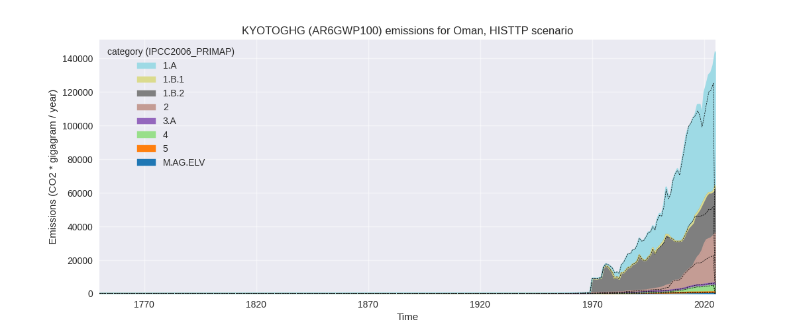
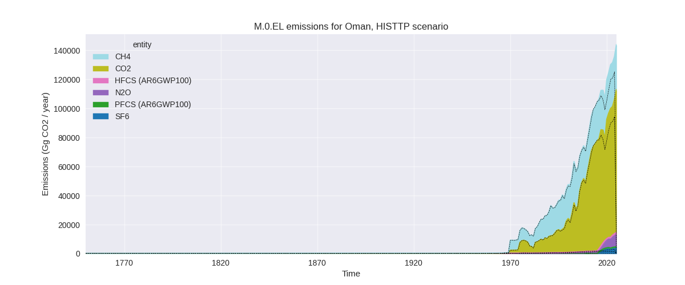
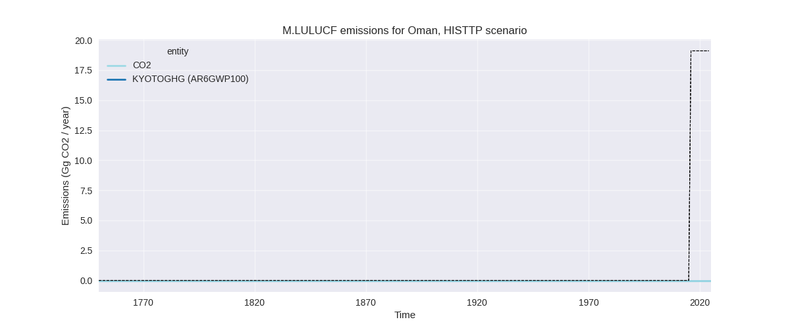
Used country reported data
The changelog with this information is available upon request for
non-commercial customers. Paying commercial customers will be provided
with the information.
Overview over changes
In the country reported priority scenario we have the following
changes for aggregate Kyoto GHG and national total emissions excluding
LULUCF (M.0.EL):
- Emissions in 2024 have changed by -13.6%% (-15511.92 Gg CO2 / year)
- Emissions in 1990-2024 have changed by -20.0%% (-13089.16 Gg CO2 / year)
In the third party priority scenario we have the following changes
for aggregate Kyoto GHG and national total emissions excluding LULUCF
(M.0.EL):
- Emissions in 2024 have changed by 8.4%% (10514.34 Gg CO2 / year)
- Emissions in 1990-2024 have changed by 3.4%% (2471.41 Gg CO2 / year)
Most
important changes per scenario and time frame
In the country reported priority scenario the
following sector-gas combinations have the highest absolute impact on
national total KyotoGHG (AR6GWP100) emissions in 2024
(up to 10 with either at least 0.2% impact on total emissions or at
least 20% change):
- 1: 1.B.2, CH4 with -21413.51 Gg CO2 / year (-86.2%, -18.8%)
- 2: 2, CO2 with -13515.82 Gg CO2 / year (-50.2%, -11.9%)
- 3: 2, N2O with 7629.02 Gg CO2 / year (inf%, 6.7%)
- 4: 4, CH4 with 5289.13 Gg CO2 / year (94.1%, 4.7%)
- 5: 2, PFCS (AR6GWP100) with 4637.58 Gg CO2 / year (8706.9%, 4.1%)
- 6: 2, SF6 with 4402.67 Gg CO2 / year (inf%, 3.9%)
- 7: 1.A, CO2 with 1280.70 Gg CO2 / year (2.7%, 1.1%)
- 8: 2, HFCS (AR6GWP100) with -1247.06 Gg CO2 / year (-83.9%, -1.1%)
- 9: 3.A, CH4 with -1086.97 Gg CO2 / year (-75.2%, -1.0%)
- 10: 2, CH4 with -611.06 Gg CO2 / year (-100.0%, -0.5%)
In the country reported priority scenario the
following sector-gas combinations have the highest absolute impact on
national total KyotoGHG (AR6GWP100) emissions in
1990-2024 (up to 10 with either at least 0.1% impact on
total emissions or at least 10% change):
- 1: 1.B.2, CH4 with -18438.67 Gg CO2 / year (-85.6%, -28.1%)
- 2: 2, HFCS (AR6GWP100) with 5213.39 Gg CO2 / year (1083.3%, 7.9%)
- 3: 2, CO2 with -2937.39 Gg CO2 / year (-24.9%, -4.5%)
- 4: 2, PFCS (AR6GWP100) with 1892.64 Gg CO2 / year (2800.0%, 2.9%)
- 5: 1.B.2, CO2 with -1288.54 Gg CO2 / year (-42.1%, -2.0%)
- 6: 2, N2O with 1155.06 Gg CO2 / year (inf%, 1.8%)
- 7: 4, CH4 with 967.19 Gg CO2 / year (43.5%, 1.5%)
- 8: 2, SF6 with 865.04 Gg CO2 / year (inf%, 1.3%)
- 9: 3.A, CH4 with -211.78 Gg CO2 / year (-23.1%, -0.3%)
- 10: 2, CH4 with -124.77 Gg CO2 / year (-69.6%, -0.2%)
In the third party priority scenario the following
sector-gas combinations have the highest absolute impact on national
total KyotoGHG (AR6GWP100) emissions in 2024 (up to 10
with either at least 0.2% impact on total emissions or at least 20%
change):
- 1: 2, N2O with 6327.44 Gg CO2 / year (2767.5%, 5.1%)
- 2: 2, SF6 with 4402.67 Gg CO2 / year (inf%, 3.5%)
- 3: 1.A, CO2 with 1618.62 Gg CO2 / year (2.2%, 1.3%)
- 4: 1.B.2, CH4 with -1405.86 Gg CO2 / year (-5.7%, -1.1%)
- 5: 1.B.2, CO2 with -1309.14 Gg CO2 / year (-30.1%, -1.0%)
- 6: 2, CO2 with 1024.67 Gg CO2 / year (7.3%, 0.8%)
- 7: M.AG.ELV, CO2 with -26.92 Gg CO2 / year (-68.9%, -0.0%)
In the third party priority scenario the following
sector-gas combinations have the highest absolute impact on national
total KyotoGHG (AR6GWP100) emissions in 1990-2024 (up
to 10 with either at least 0.1% impact on total emissions or at least
10% change):
- 1: 2, N2O with 910.15 Gg CO2 / year (683.8%, 1.3%)
- 2: 2, SF6 with 865.04 Gg CO2 / year (inf%, 1.2%)
- 3: 1.A, CO2 with 609.99 Gg CO2 / year (1.6%, 0.8%)
- 4: 2, CO2 with 484.58 Gg CO2 / year (8.6%, 0.7%)
- 5: 1.B.2, CO2 with -369.91 Gg CO2 / year (-12.1%, -0.5%)
- 6: M.AG.ELV, CO2 with -4.68 Gg CO2 / year (-16.8%, -0.0%)
Notes on data changes
The changelog with this information is available upon request for
non-commercial customers. Paying commercial customers will be provided
with the information.
Changes by sector and gas
For each scenario and time frame the changes are displayed for all
individual sectors and all individual gases. In the sector plot we use
aggregate Kyoto GHGs in AR6GWP100. In the gas plot we usenational total
emissions without LULUCF.
country reported scenario
2024
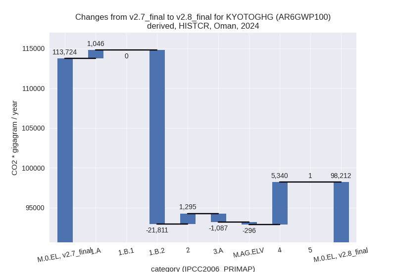
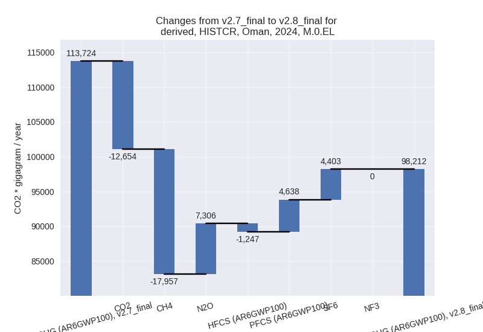
1990-2024
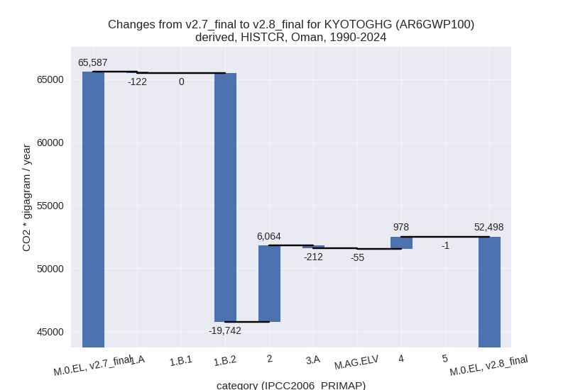
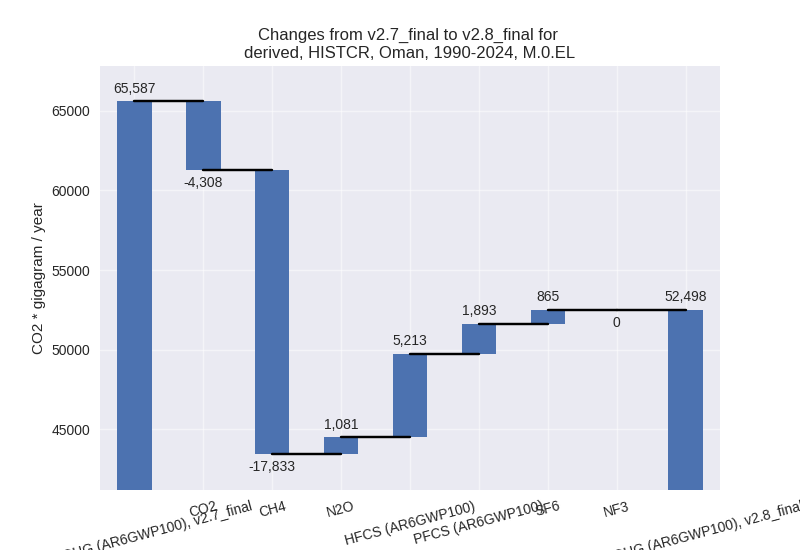
third party scenario
2024
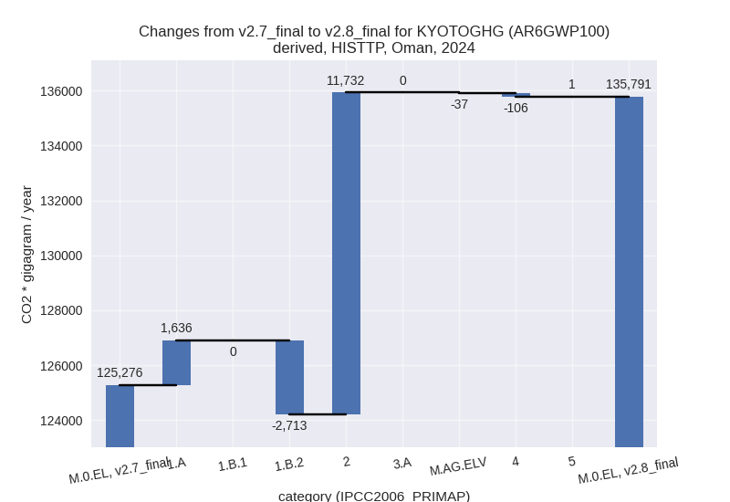
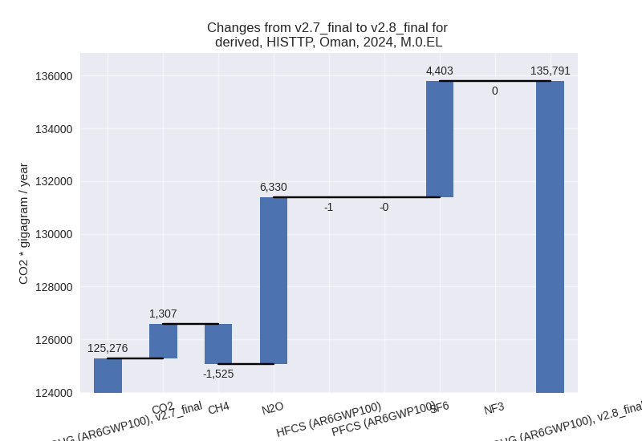
1990-2024
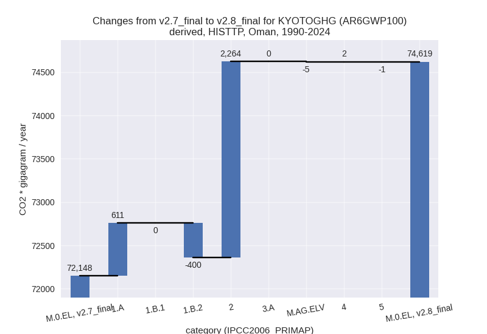
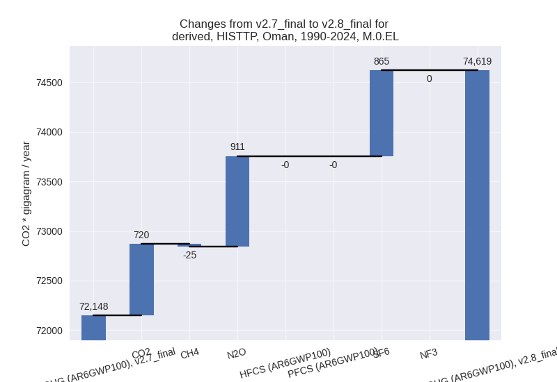
Detailed changes for the
scenarios:
country reported scenario
(HISTCR):
Most important changes
per time frame
For 2024 the following sector-gas combinations have
the highest absolute impact on national total KyotoGHG (AR6GWP100)
emissions in 2024 (up to 20 with either at least 0.2%
impact on total emissions or at least 20% change):
- 1: 1.B.2, CH4 with -21413.51 Gg CO2 / year (-86.2%), -18.8%)
- 2: 2, CO2 with -13515.82 Gg CO2 / year (-50.2%), -11.9%)
- 3: 2, N2O with 7629.02 Gg CO2 / year (inf%), 6.7%)
- 4: 4, CH4 with 5289.13 Gg CO2 / year (94.1%), 4.7%)
- 5: 2, PFCS (AR6GWP100) with 4637.58 Gg CO2 / year (8706.9%), 4.1%)
- 6: 2, SF6 with 4402.67 Gg CO2 / year (inf%), 3.9%)
- 7: 1.A, CO2 with 1280.70 Gg CO2 / year (2.7%), 1.1%)
- 8: 2, HFCS (AR6GWP100) with -1247.06 Gg CO2 / year (-83.9%), -1.1%)
- 9: 3.A, CH4 with -1086.97 Gg CO2 / year (-75.2%), -1.0%)
- 10: 2, CH4 with -611.06 Gg CO2 / year (-100.0%), -0.5%)
- 11: 1.B.2, CO2 with -391.67 Gg CO2 / year (-9.0%), -0.3%)
- 12: M.AG.ELV, N2O with -269.34 Gg CO2 / year (-100.0%), -0.2%)
- 13: 1.A, CH4 with -134.81 Gg CO2 / year (-90.2%), -0.1%)
- 14: 1.A, N2O with -100.21 Gg CO2 / year (-63.6%), -0.1%)
- 15: 4, N2O with 51.24 Gg CO2 / year (36.7%), 0.0%)
- 16: M.AG.ELV, CO2 with -26.92 Gg CO2 / year (-68.9%), -0.0%)
- 17: 1.B.2, N2O with -6.32 Gg CO2 / year (-39.3%), -0.0%)
For 1990-2024 the following sector-gas combinations
have the highest absolute impact on national total KyotoGHG (AR6GWP100)
emissions in 1990-2024 (up to 20 with either at least
0.1% impact on total emissions or at least 10% change):
- 1: 1.B.2, CH4 with -18438.67 Gg CO2 / year (-85.6%), -28.1%)
- 2: 2, HFCS (AR6GWP100) with 5213.39 Gg CO2 / year (1083.3%), 7.9%)
- 3: 2, CO2 with -2937.39 Gg CO2 / year (-24.9%), -4.5%)
- 4: 2, PFCS (AR6GWP100) with 1892.64 Gg CO2 / year (2800.0%), 2.9%)
- 5: 1.B.2, CO2 with -1288.54 Gg CO2 / year (-42.1%), -2.0%)
- 6: 2, N2O with 1155.06 Gg CO2 / year (inf%), 1.8%)
- 7: 4, CH4 with 967.19 Gg CO2 / year (43.5%), 1.5%)
- 8: 2, SF6 with 865.04 Gg CO2 / year (inf%), 1.3%)
- 9: 3.A, CH4 with -211.78 Gg CO2 / year (-23.1%), -0.3%)
- 10: 2, CH4 with -124.77 Gg CO2 / year (-69.6%), -0.2%)
- 11: 1.A, CO2 with -77.69 Gg CO2 / year (-0.3%), -0.1%)
- 12: 1.A, CH4 with -24.95 Gg CO2 / year (-39.2%), -0.0%)
- 13: 1.A, N2O with -19.74 Gg CO2 / year (-23.3%), -0.0%)
- 14: 1.B.2, N2O with -14.48 Gg CO2 / year (-76.0%), -0.0%)
- 15: 4, N2O with 10.82 Gg CO2 / year (16.9%), 0.0%)
- 16: M.AG.ELV, CO2 with -4.68 Gg CO2 / year (-16.8%), -0.0%)
Changes in the main sectors for aggregate KyotoGHG (AR6GWP100)
are
- 1: Total sectoral emissions in 2022 are 52959.67 Gg
CO2 / year which is 54.9% of M.0.EL emissions. 2024 Emissions have
changed by -27.0% (-20765.81 Gg CO2
/ year). 1990-2024 Emissions have changed by -41.1% (-19864.06 Gg CO2 / year). For 2024
the changes per gas
are:
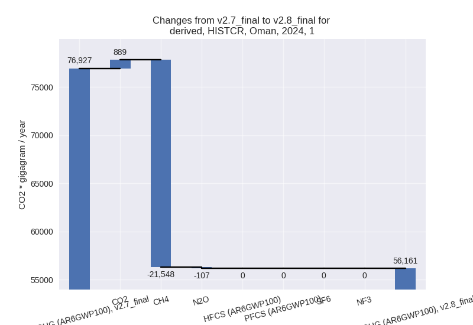
For 1990-2024 the changes per gas
are:
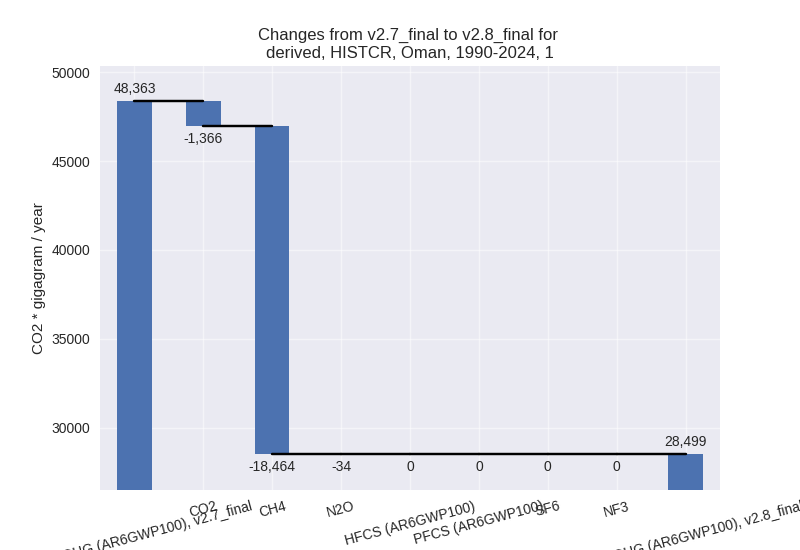
The changes come from the following subsectors:
- 1.A: Total sectoral emissions in 2022 are 45688.03
Gg CO2 / year which is 86.3% of category 1 emissions. 2024 Emissions
have changed by 2.2% (1045.68 Gg CO2
/ year). 1990-2024 Emissions have changed by -0.5% (-122.38 Gg CO2 / year). For 2024
the changes per gas
are:
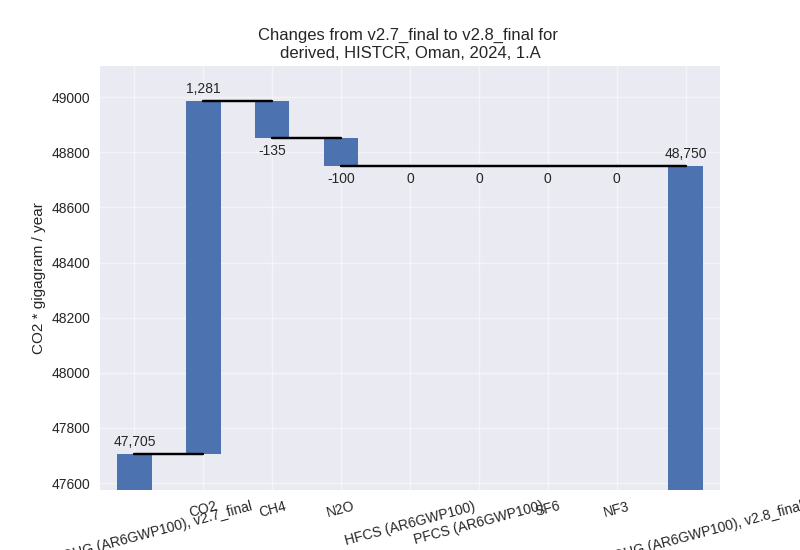
There is no subsector information available in PRIMAP-hist.
- 1.B.2: Total sectoral emissions in 2022 are 7271.64
Gg CO2 / year which is 13.7% of category 1 emissions. 2024 Emissions
have changed by -74.6% (-21811.50 Gg
CO2 / year). 1990-2024 Emissions have changed by -80.2% (-19741.68 Gg CO2 / year). For 2024
the changes per gas
are:
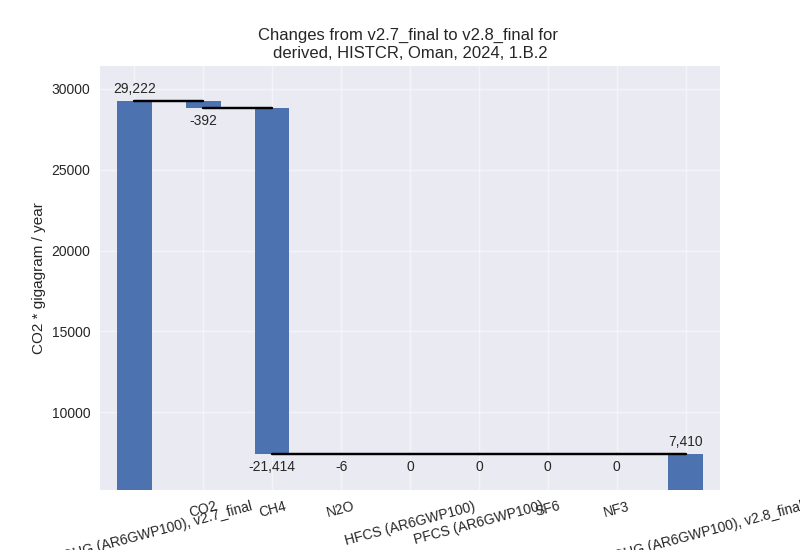
For 1990-2024 the changes per gas
are:
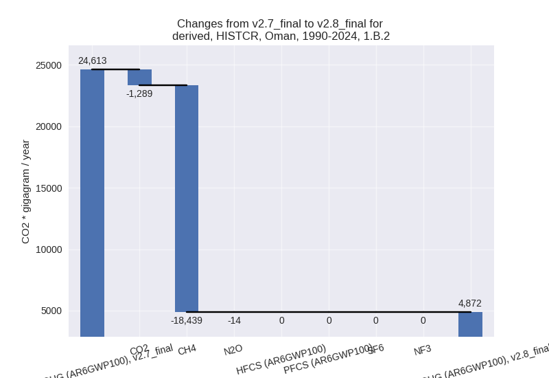
There is no subsector information available in PRIMAP-hist.
- 2: Total sectoral emissions in 2022 are 32406.92 Gg
CO2 / year which is 33.6% of M.0.EL emissions. 2024 Emissions have
changed by 4.5% (1295.33 Gg CO2 /
year). 1990-2024 Emissions have changed by 48.5% (6063.97 Gg CO2 / year). For 2024
the changes per gas
are:
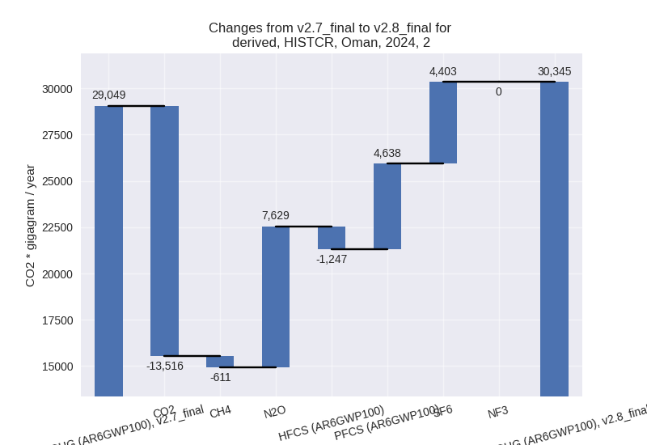
For 1990-2024 the changes per gas
are:
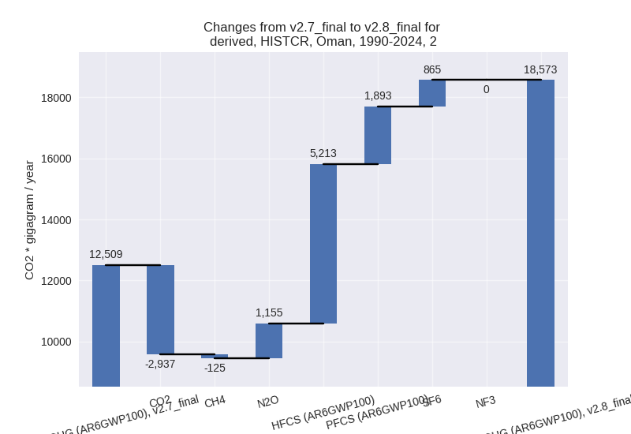
- M.AG: Total sectoral emissions in 2022 are 361.28
Gg CO2 / year which is 0.4% of M.0.EL emissions. 2024 Emissions have
changed by -78.9% (-1383.23 Gg CO2 /
year). 1990-2024 Emissions have changed by -11.7% (-266.55 Gg CO2 / year). For 2024
the changes per gas
are:
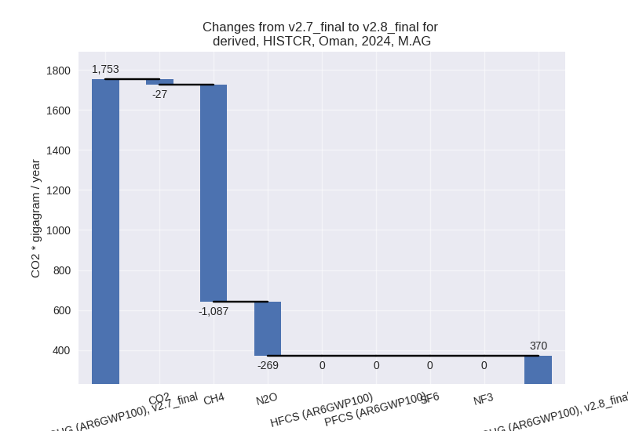
For 1990-2024 the changes per gas
are:
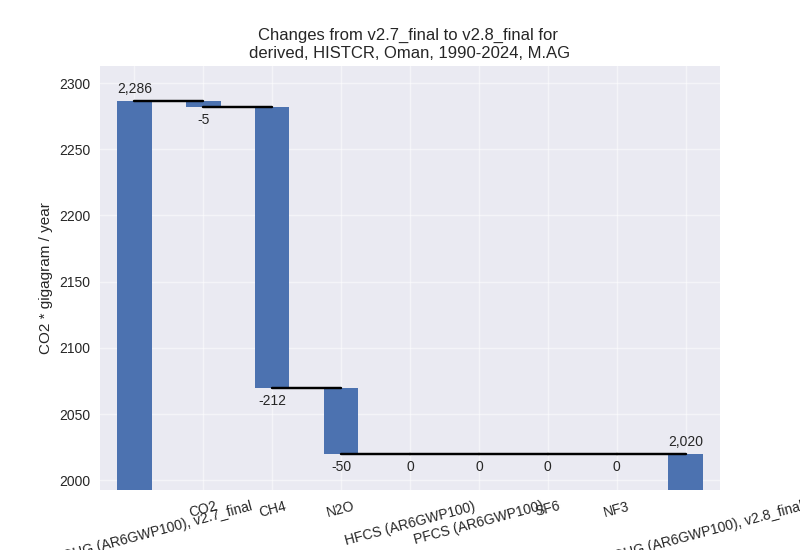
The changes come from the following subsectors:
- 3.A: Total sectoral emissions in 2022 are 344.43 Gg
CO2 / year which is 95.3% of category M.AG emissions. 2024 Emissions
have changed by -75.2% (-1086.97 Gg
CO2 / year). 1990-2024 Emissions have changed by -23.1% (-211.78 Gg CO2 / year). For 2024
the changes per gas
are:
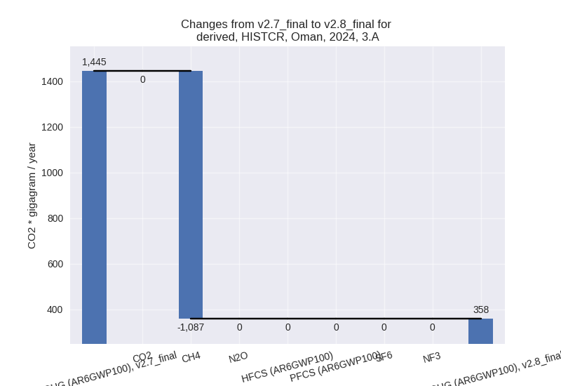
For 1990-2024 the changes per gas
are:
There is no subsector information available in PRIMAP-hist.
- M.AG.ELV: Total sectoral emissions in 2022 are
16.85 Gg CO2 / year which is 4.7% of category M.AG emissions. 2024
Emissions have changed by -96.1%
(-296.26 Gg CO2 / year). 1990-2024 Emissions have changed by -4.0% (-54.77 Gg CO2 / year). For 2024 the
changes per gas
are:
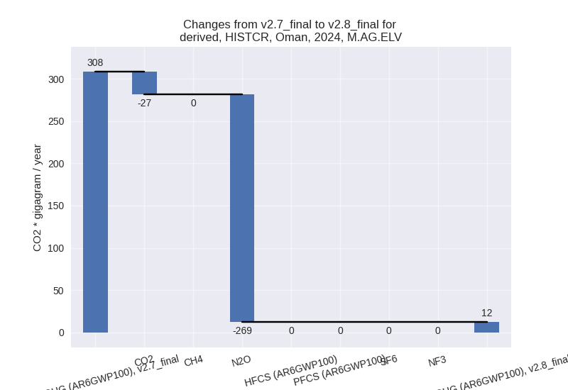
For 1990-2024 the changes per gas
are:
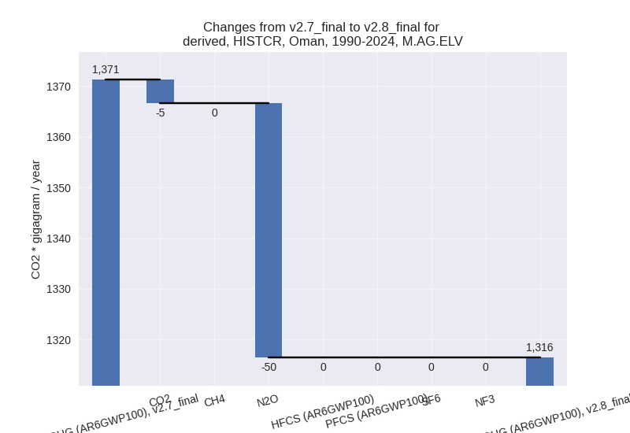
There is no subsector information available in PRIMAP-hist.
- 4: Total sectoral emissions in 2022 are 10556.76 Gg
CO2 / year which is 10.9% of M.0.EL emissions. 2024 Emissions have
changed by 92.8% (5340.37 Gg CO2 /
year). 1990-2024 Emissions have changed by 42.7% (978.02 Gg CO2 / year). For 2024 the
changes per gas
are:
For 1990-2024 the changes per gas
are:
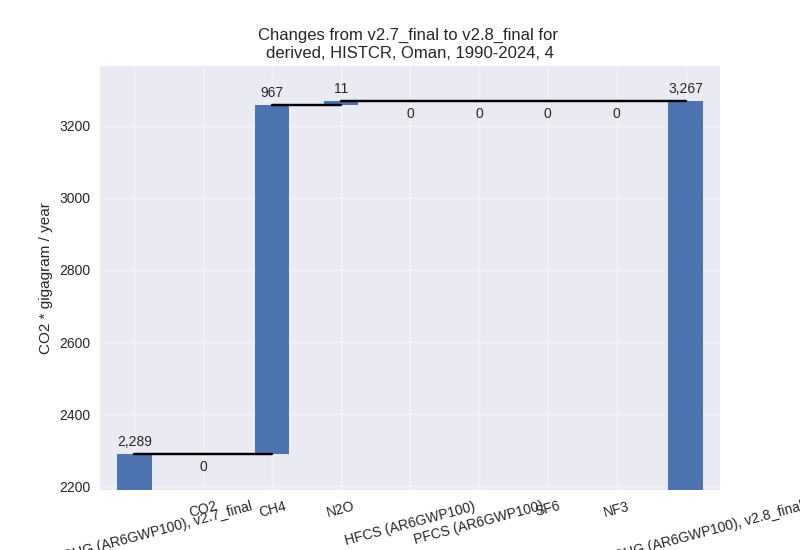
- 5: Total sectoral emissions in 2022 are 230.04 Gg
CO2 / year which is 0.2% of M.0.EL emissions. 2024 Emissions have
changed by 0.6% (1.43 Gg CO2 /
year). 1990-2024 Emissions have changed by -0.4% (-0.53 Gg CO2 / year).
third party scenario (HISTTP):
Most important changes
per time frame
For 2024 the following sector-gas combinations have
the highest absolute impact on national total KyotoGHG (AR6GWP100)
emissions in 2024 (up to 20 with either at least 0.2%
impact on total emissions or at least 20% change):
- 1: 2, N2O with 6327.44 Gg CO2 / year (2767.5%), 5.1%)
- 2: 2, SF6 with 4402.67 Gg CO2 / year (inf%), 3.5%)
- 3: 1.A, CO2 with 1618.62 Gg CO2 / year (2.2%), 1.3%)
- 4: 1.B.2, CH4 with -1405.86 Gg CO2 / year (-5.7%), -1.1%)
- 5: 1.B.2, CO2 with -1309.14 Gg CO2 / year (-30.1%), -1.0%)
- 6: 2, CO2 with 1024.67 Gg CO2 / year (7.3%), 0.8%)
- 7: M.AG.ELV, CO2 with -26.92 Gg CO2 / year (-68.9%), -0.0%)
- 8: M.AG.ELV, CH4 with -0.18 Gg CO2 / year (-53.1%), -0.0%)
For 1990-2024 the following sector-gas combinations
have the highest absolute impact on national total KyotoGHG (AR6GWP100)
emissions in 1990-2024 (up to 20 with either at least
0.1% impact on total emissions or at least 10% change):
- 1: 2, N2O with 910.15 Gg CO2 / year (683.8%), 1.3%)
- 2: 2, SF6 with 865.04 Gg CO2 / year (inf%), 1.2%)
- 3: 1.A, CO2 with 609.99 Gg CO2 / year (1.6%), 0.8%)
- 4: 2, CO2 with 484.58 Gg CO2 / year (8.6%), 0.7%)
- 5: 1.B.2, CO2 with -369.91 Gg CO2 / year (-12.1%), -0.5%)
- 6: M.AG.ELV, CO2 with -4.68 Gg CO2 / year (-16.8%), -0.0%)
Changes in the main sectors for aggregate KyotoGHG (AR6GWP100)
are
- 1: Total sectoral emissions in 2022 are 97585.79 Gg
CO2 / year which is 75.0% of M.0.EL emissions. 2024 Emissions have
changed by -1.1% (-1077.21 Gg CO2 /
year). 1990-2024 Emissions have changed by 0.3% (210.90 Gg CO2 / year).
- 2: Total sectoral emissions in 2022 are 26643.24 Gg
CO2 / year which is 20.5% of M.0.EL emissions. 2024 Emissions have
changed by 71.3% (11731.85 Gg CO2 /
year). 1990-2024 Emissions have changed by 35.0% (2264.26 Gg CO2 / year). For 2024
the changes per gas
are:
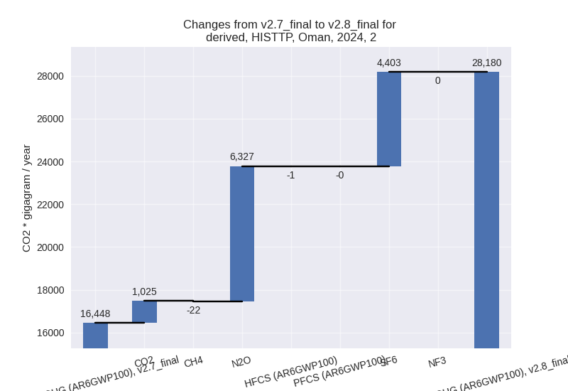
For 1990-2024 the changes per gas
are:
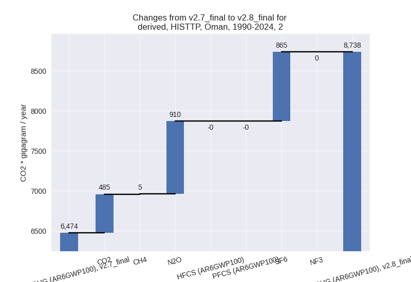
- M.AG: Total sectoral emissions in 2022 are 1998.86
Gg CO2 / year which is 1.5% of M.0.EL emissions. 2024 Emissions have
changed by -1.7% (-36.04 Gg CO2 /
year). 1990-2024 Emissions have changed by -0.4% (-4.99 Gg CO2 / year).
- 4: Total sectoral emissions in 2022 are 3713.86 Gg
CO2 / year which is 2.9% of M.0.EL emissions. 2024 Emissions have
changed by -2.6% (-105.68 Gg CO2 /
year). 1990-2024 Emissions have changed by 0.1% (1.78 Gg CO2 / year). For 2024 the
changes per gas
are:
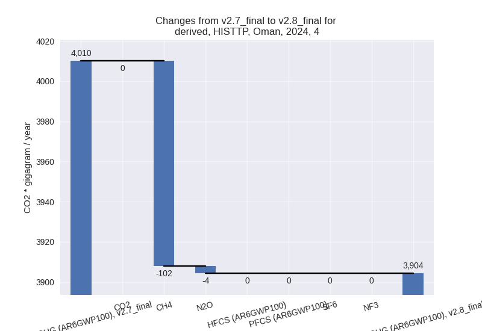
- 5: Total sectoral emissions in 2022 are 230.04 Gg
CO2 / year which is 0.2% of M.0.EL emissions. 2024 Emissions have
changed by 0.6% (1.43 Gg CO2 /
year). 1990-2024 Emissions have changed by -0.4% (-0.53 Gg CO2 / year).